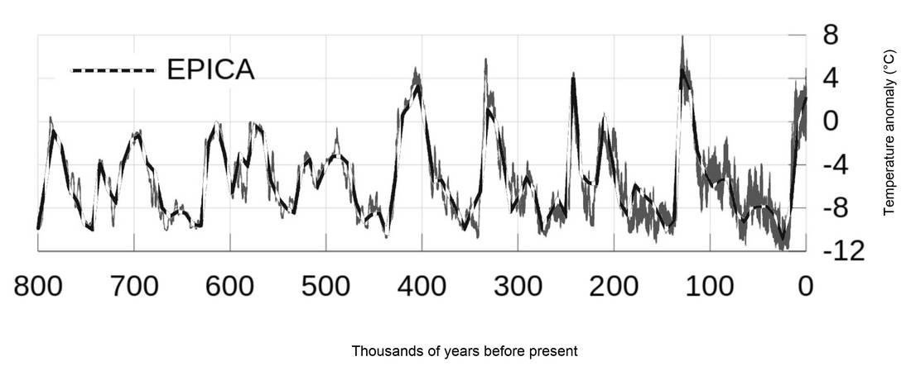

Homo sapiens in a Changing African Environment

How did glacial cycles reshape Africa, and how did Homo sapiens leave it?
As Homo sapiens spread across the world, people drew on inherited skills while experimenting in unfamiliar environments. Staying warm, finding food, and working new materials were practical problems faced by successive generations of migrants. Their long experience offers an enduring lesson for innovation: Adapt to local conditions.
Who are we? Where do we come from? Different cultures answer these questions through creation stories. In Jewish and Christian traditions, the story of Adam and Eve tells of humanity’s origins. Science seeks testable answers in fossils, artifacts, and genetic information.
Charles Darwin (1809–1882) published On the Origin of Species in 1859, explaining biological evolution through natural selection. He addressed human evolution systematically in The Descent of Man in 1871. Research today shows that humans and other living apes share ancestors, with different branches evolving along their own paths in different environments.
For more than a century, archaeology, paleoanthropology, and genetics have added detail to this picture. Current evidence supports an African origin for Homo sapiens, whose emergence may have involved long-standing connections among populations across several parts of Africa. Homo sapiens dispersed beyond Africa at different times. Earlier movements reached Southwest Asia; the principal ancestry of most people living outside Africa today is associated with a dispersal roughly sixty to seventy thousand years ago.
Climate, food, terrain, population connections, and technology all shaped this history. Recurrent pressures on survival may have influenced long-term evolutionary directions. A drought, a conflict, or the choices of a few people could change the fate of a particular group. Viewed across long periods, certain patterns recur. Seen through the lives of individual migrants, history is full of chance, setbacks, and surprises.
Let us follow the clues left by fossils, tools, and genes into our distant ancestors’ lives, to see how they learned as they moved and used technology to expand the places where they could survive.
Over approximately the past eight hundred thousand years, Earth has experienced repeated glacial and interglacial periods, with the longer cycles of cooling and warming occurring on a roughly hundred-thousand-year timescale. Figure 1-1 shows local temperature changes reconstructed from an Antarctic ice core, offering a view of this long process. One study estimates that global mean temperature at the Last Glacial Maximum was about 6°C below the preindustrial level. The Holocene, which began approximately 11,700 years ago, lies within the present interglacial period.
Figure 1-1. Local temperature anomalies reconstructed from the Antarctic EPICA ice core over approximately eight hundred thousand years. The vertical axis shows temperature differences from a reference baseline; the right-hand end of the horizontal axis approaches the present.

Adapted from Autopilot; axis labels translated. CC BY-SA 3.0, https://commons.wikimedia.org/w/index.php?curid=10874222.
During glacial periods, large quantities of water were locked in continental ice sheets and glaciers, lowering sea level. At the Last Glacial Maximum, sea level was more than a hundred meters below today’s, exposing extensive continental shelves. The Malay Peninsula, Sumatra, Java, and Borneo formed a larger landmass, although sea passages still separated it from Sahul, the continent that included Australia. Connections between the Japanese islands and the mainland also varied by place and period. Changing land routes and opportunities for sea crossings influenced human migration.
The East African Rift system extends southward from the Afar region to Mozambique, passing through highlands, lakes, grasslands, and arid country. It preserves abundant evidence of human evolution. Other parts of Africa also offer important clues: Early Homo sapiens fossils from Jebel Irhoud in Morocco are about three hundred thousand years old. Evidence from different regions suggests that the emergence of our species may have involved long-standing links among several African populations.
Our ancestors lived in close contact with the plants and animals around them. They gathered plants, obtained animal resources, and learned which stones were suitable for making tools and which places were good for a stay. Wood, hides, and plant fibers decay, leaving far fewer traces than stone. The tools we can identify today represent only part of their material lives.
The Last Interglacial occurred approximately 130,000 to 115,000 years ago, followed by the last glacial period. Changes in temperature also altered African rainfall, lakes, and vegetation, making some places more habitable while reducing resources elsewhere. People adjusted their ranges and connections as conditions changed. Genetic research offers clues to ancient population fluctuations, although particular population sizes remain difficult to establish.
Different groups gradually expanded their ranges amid these environmental changes. Marine resources along the Red Sea may have supplied food for some migrants, while deserts, the distribution of freshwater, and sea passages posed obstacles. Making a living in a new place depended on how people used local conditions.
Two routes out of Africa are frequently discussed: a northern route through the Nile Valley and the Sinai Peninsula, and a southern route across the Bab el-Mandeb Strait. Lower sea levels may have narrowed the southern crossing and exposed more islands, changing the conditions for passage.
If people crossed by the southern route, we can imagine them lashing together logs, reeds, or other buoyant materials and carrying their families and simple tools toward a shore they could see but had never reached. Such a rudimentary craft might have carried an extraordinary adventure in human history. Movements out of Africa began much earlier: Homo erectus and other hominins dispersed long before Homo sapiens, while Neanderthals evolved chiefly in Eurasia.
For the descendants of Homo sapiens who eventually spread across the world, leaving Africa was a historic leap. It opened vast new spaces for survival—and treasure houses of unfamiliar resources for invention. New plants, animals, stones, and climates brought dangers as well as needs and inspiration. Generation after generation, people migrated while learning how to live in a new world.
This article is from Chapter 1, Makers Go Global, of The Power of Desire: A Brief History of Scientific & Technological Innovation (second edition) — Homo sapiens out of Africa: Homo sapiens in a Changing African Environment. Previous: History of Subsistence Innovation: Introduction. Next: Neanderthals and Homo sapiens: Homo sapiens in a Changing African Environment (continued). See the full serialization index.